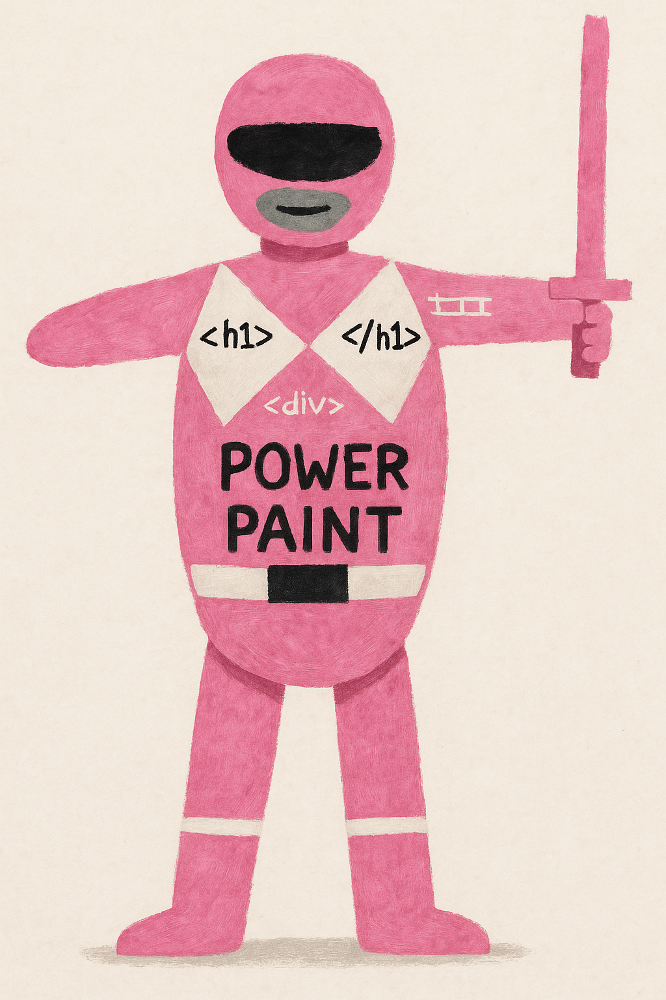

Vicaire Benoit
Developpeur
Competences IT
Gestion de l'AD
Support niveau 1
Gestion des pannes utilisateurs
Support niveau 2
Gestion des pannes logiciels,serveurs
Developpement
Javascript/html/css/python
Experiences Professionelles
2019-2022 : Plongeur en restauration
2016-2018 : BTS SIO en alternance
2016 : Maintenance IT : Action Micro
Formations
2016-2018 : BTS service internes aux organisation
2012-2014 : BTS en management unité commerciale
2011-2012 : Terminale Scientifique

A propos de moi
Je suis un codeur ranger: force paint
Connaissances transverse
Le juijitsu occitan
Paint
La course à pied